Целью лабораторной работы является получение практических навыков
работы с физической рабочей областью симулятора Cisco Packet Tracer. В
ходе работы необходимо научиться учитывать физические параметры сети,
такие как тип среды передачи данных, длина кабеля, затухание сигнала, а
также обоснованно применять сетевое оборудование (повторители, различные
типы кабелей) для обеспечения работоспособности сети на больших
расстояниях.
Назначение имени городу
Moscow
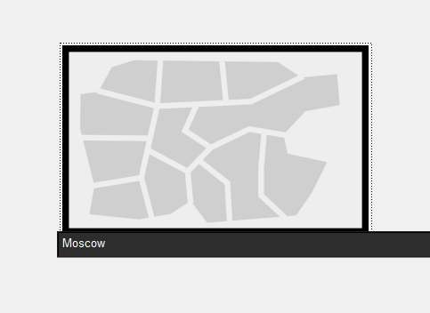
Назначение имени городу
Moscow
Создание и
размещение зданий Donskaya и Pavlovskaya
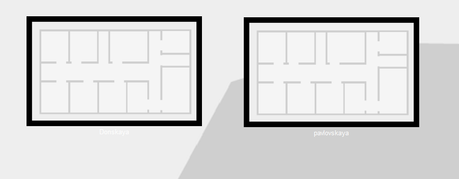
Создание и размещение зданий Donskaya и
Pavlovskaya
Размещение серверной в
здании Donskaya
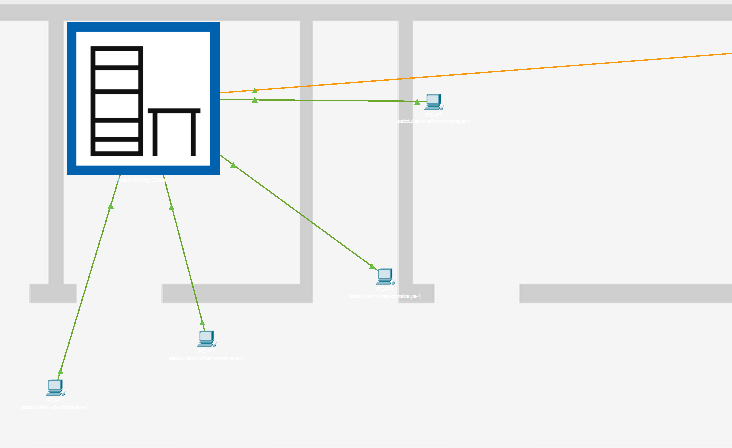
Размещение серверной в здании
Donskaya
Отображение
серверных стоек и оборудования
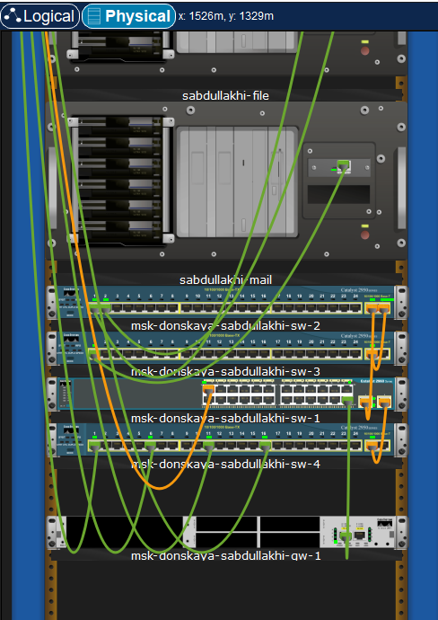
Отображение серверных стоек и
оборудования
Размещение устройств
в здании Pavlovskaya
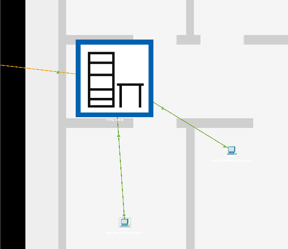
Размещение устройств в здании
Pavlovskaya
Проверка соединения
между коммутаторами
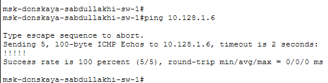
Проверка соединения между
коммутаторами
Включение учёта длины кабеля
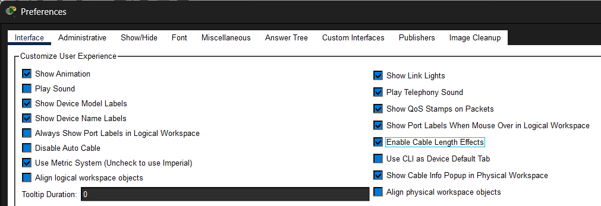
Включение учета длины кабеля
Размещение
территорий на большом расстоянии
Размещение территорий на большом
расстоянии
Отсутствие соединения
между коммутаторами
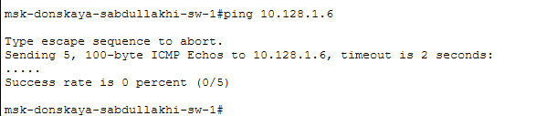
Отсутствие соединения между
коммутаторами
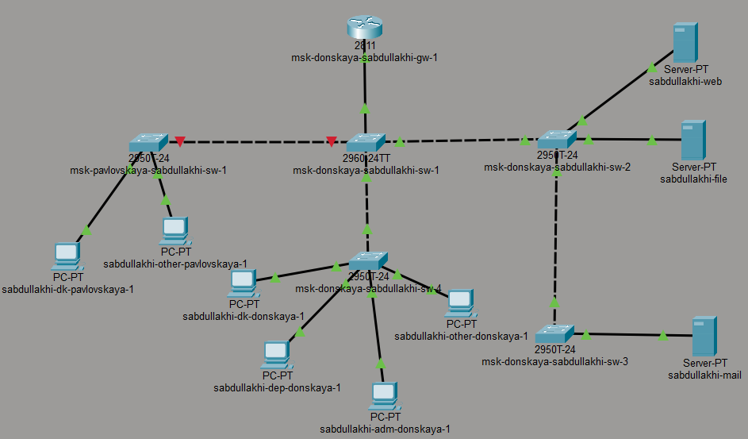
Отсутствие соединения между
коммутаторами
Настройка повторителей и
выбор модулей
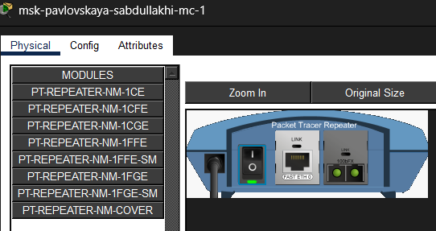
Настройка повторителя и выбор
модулей
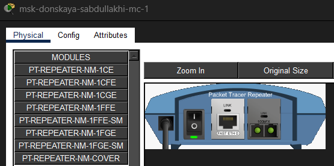
Настройка повторителя и выбор
модулей
Схема
подключения с использованием повторителей
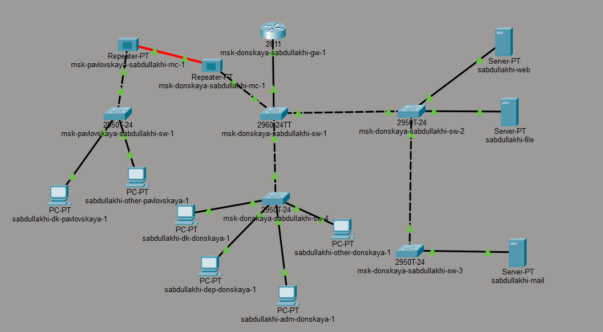
Схема подключения с использованием
повторителей
Успешная
проверка соединения после добавления повторителей
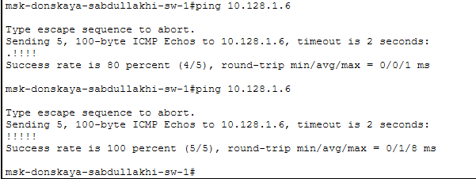
Успешная проверка соединения после
добавления повторителей
3. Вывод
В ходе лабораторной работы освоены навыки работы с физической рабочей
областью Packet Tracer. Установлено, что превышение допустимой длины
кабеля (более 100 м) приводит к потере связи. Для восстановления
соединения использованы повторители и оптоволокно, что позволило
обеспечить стабильную передачу данных на большом расстоянии. # Спасибо
за внимание